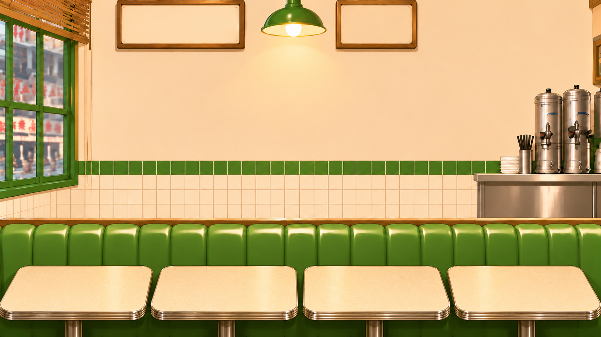
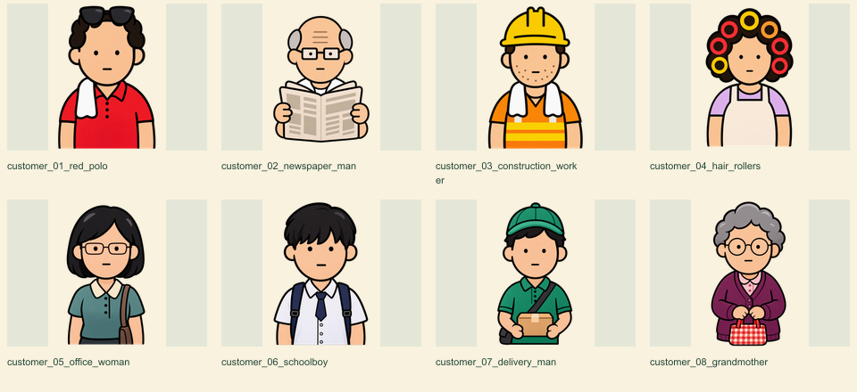
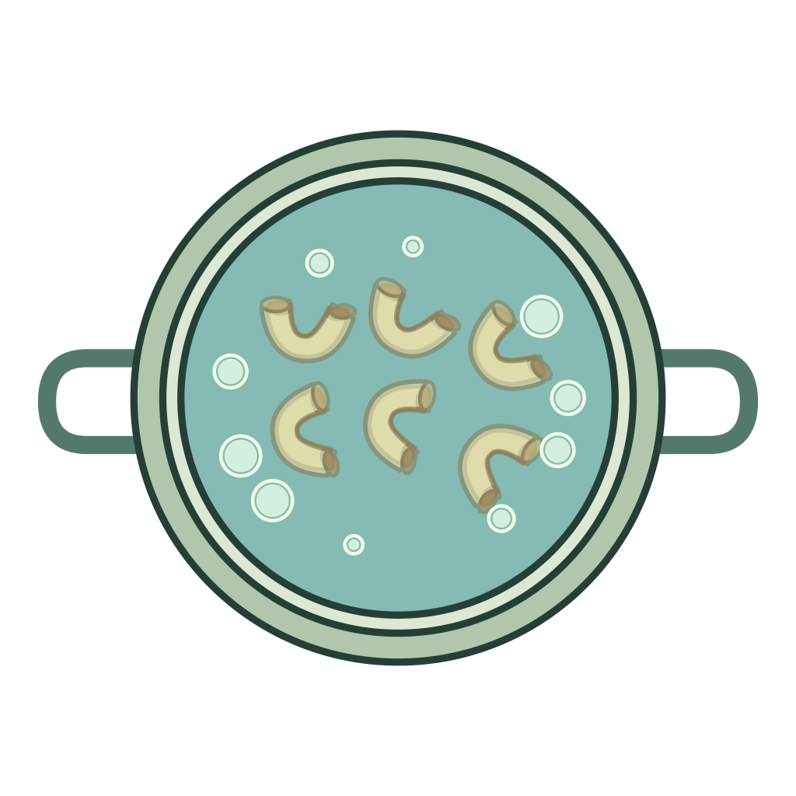
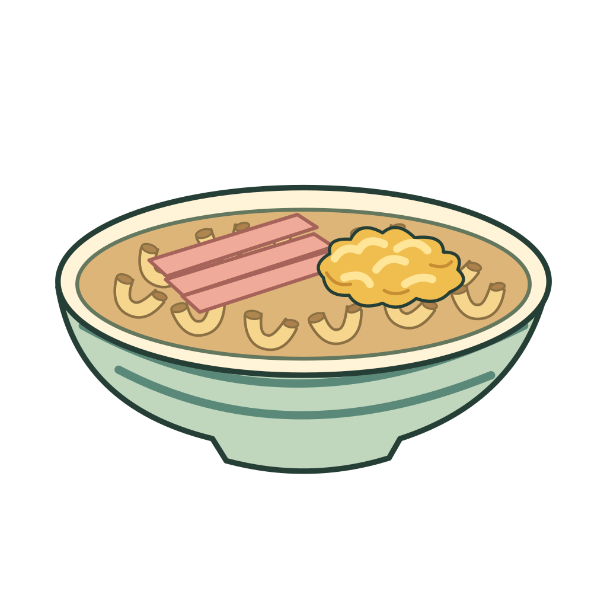
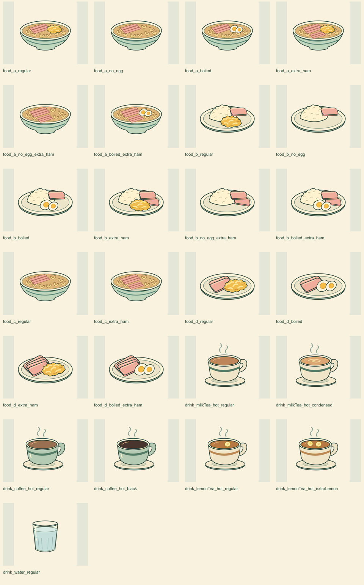
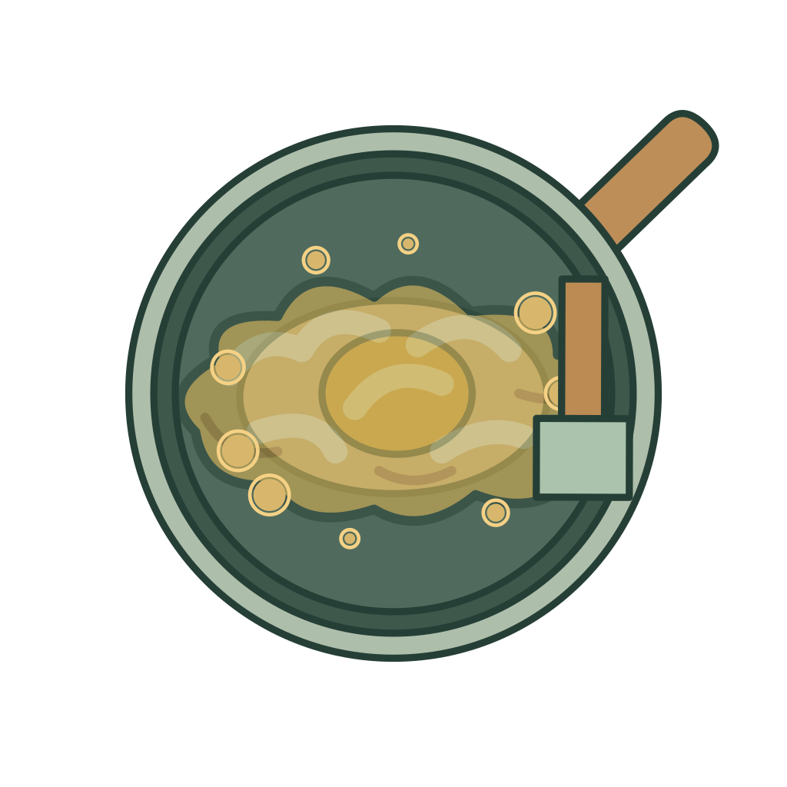
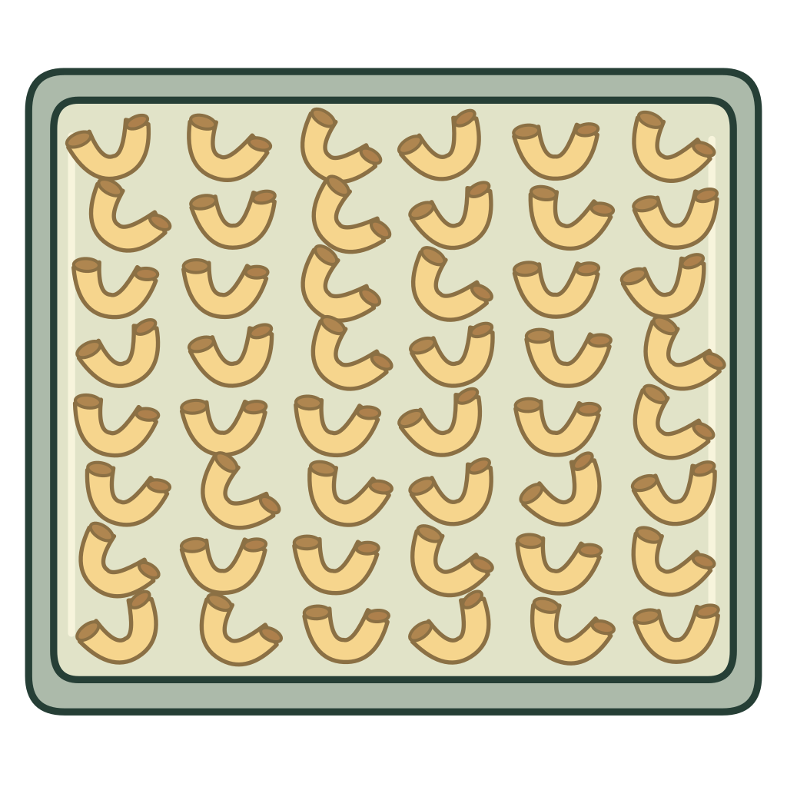

地獄茶記Hell Cha Chaan Teng
一聲「A 餐，轉烚蛋，加腿，熱茶走」，廚房就要開始轉。讀懂點單黑話，處理原料，趕在客人失去耐性前上菜。
Decode a cha chaan teng order. Cook, plate and serve under pressure. A projection installation about the speed and rhythm of Hong Kong tea restaurants.

四位客人，同時落單Four customers, four independent orders
四種原料，交叉配餐Macaroni · Rice · Ham · Egg
取料、煮食、上菜、清桌Prepare, cook, serve and clear
開檔入口 Explore the project
遊戲 · 投影 · 美術審閱
顧客遊戲
Customer screen
四位街坊用中英對照的茶記黑話點單，各自倒數等餐。

灶台與餐桌
Kitchen & tabletop projection
完整 U 形布局。觀看取料、烹調、送餐與吃完清桌。

中英常餐牌
Bilingual set menu
A–D 餐、熱飲與改配，選好後預覽出品並下載組合圖。

美術貼圖庫
Art library
247 張 PNG，按分類搜尋、放大審閱，單張或整包下載。

左側灶台
Projector · Stove
兩口煮鍋與一口炒鑊，食材依菜式處理並移往出餐位。

右側原料
Projector · Ingredients
通粉、米、蛋、火腿四個備料位置，對應實體道具。
從一張餐單開始
玩家以鍋、鑊和杯子回應訂單。每張單包含套餐、蛋的做法、火腿份量與飲品要求；配方完成後，餐點移到對應桌號，逐漸吃完並留下空餐具。
Physical cookware and cups connect orders to the kitchen. The shared state keeps cooking and serving aligned across the projection surfaces.